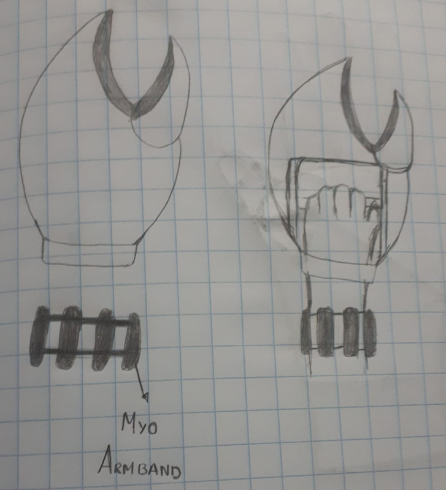

PRESENTACIÓN DE LOS CONCEPTOS DE SOLUCIÓN
REQUERIMIENTOS TÉCNICOS
RÁPIDA REHABILITACIÓN
Fijación del pulgar para evitar el movimiento radial, cubital y de pinza.
MATERIAL
Fácil de limpiar, no susceptible a la grasa y rígido
FUERZA REQUERIDA
Fuerza de corte:12N y fuerza de agarre:10N
PESO DEL PROTOTIPO
Menor a 500g.
ECONÓMICO
De fácil acceso monetario para las personas.
PROPUESTAS
DEDO EXTRA
- SISTEMA MECÁNICO: En este sistema se colocará un actuador en la zona metacarpiana del dedo pulgar, en donde servirá de soporte para el corte del pollo y así permitir el corte.
- SISTEMA DE APOYO EN LOS DEDOS INDICE Y MEDIO: Se necesitará un sistema en los dedos índice y medio en donde puedan aplicar mayor fuerza con menor esfuerzo.
- FÉRULA MULTIMATERIAL: Combinación entre materiales rígidos y dinámicos.
- SISTEMA DE ALARMA: A la hora de hacer un movimiento brusco del pulgar un sensor lo detectará y se obtendrá un aviso de precaución por un posible agravamiento de dicha tendinitis.

KRAB HAND
- SISTEMA MECÁNICO: Permitirá el corte del pollo mediante un sistema de cizalladura similar a la de un cangrejo.
- ACTIVACIÓN DEL CORTE POR MYO ARMBAND: El sistema de activación para el corte será por el Myo Amband en donde un movimiento en cualquier eje permitirá el cierre de la pinza.
- FÉRULA MULTIMATERIAL: Combinación entre materiales rígidos y dinámicos.
GUANTE
- ACTUADOR NEUMÁTICO: En donde además, se colocará dos cuchillas eléctricas pequeñas en los dedos medio e índice.
- ACTIVACIÓN DEL ACTUADOR POR MYO ARMBAND: Se colocará un Myo Armband que actuará de la misma manera que en la solución 2.
- GUANTE RÍGIDO: Dicho guante inmovilizará la zona del dedo pulgar, asimismo este guante no permite la rigidez al 100%.

ELECCION DE LA MEJOR PORPUESTA
Para la elección de la mejor solución posible, se eligió el que cumplía mejor los requerimientos técnicos, por lo que se desarrolló una tabla en donde se pueda enumerar del 0 al 4 qué tan bien cumplía el requerimiento, siendo el 0 el que no cumple el requerimiento y 4 el que cumple a su totalidad